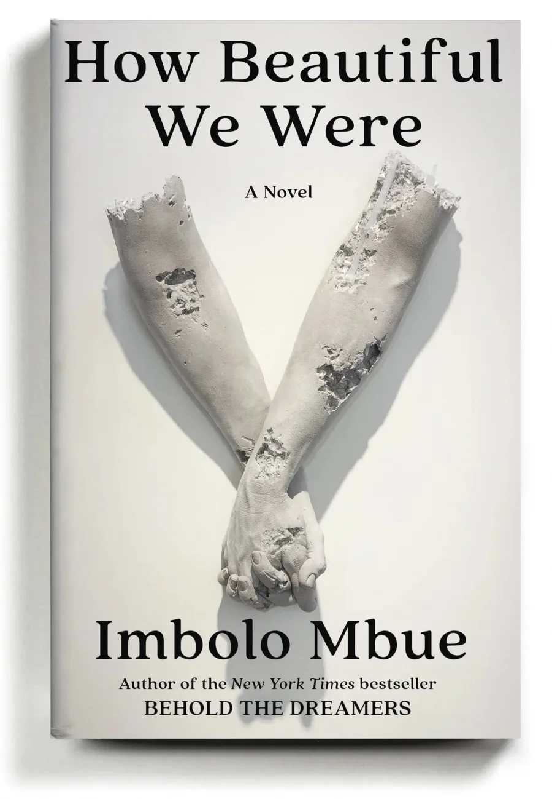
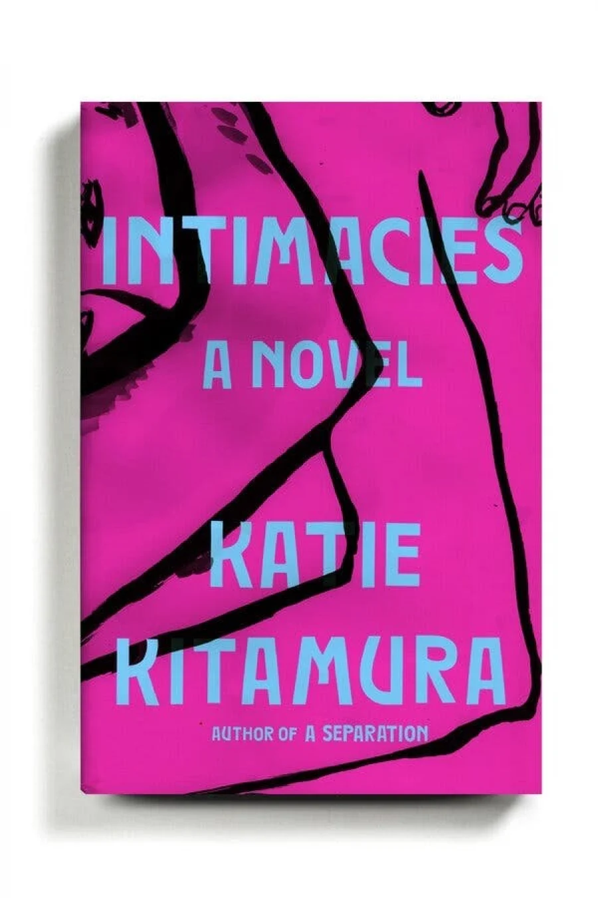
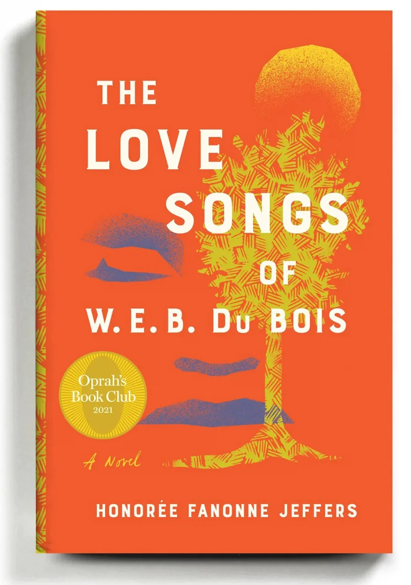
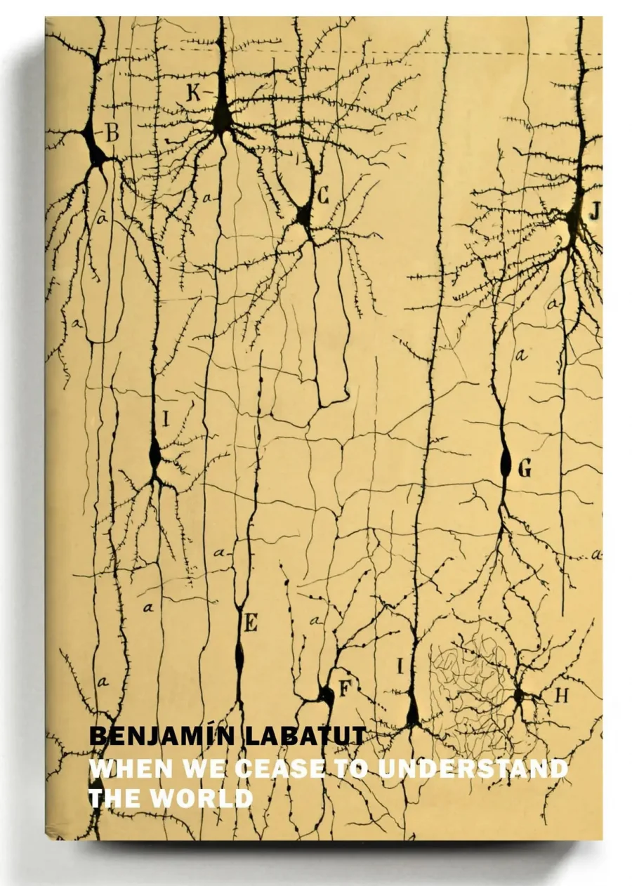
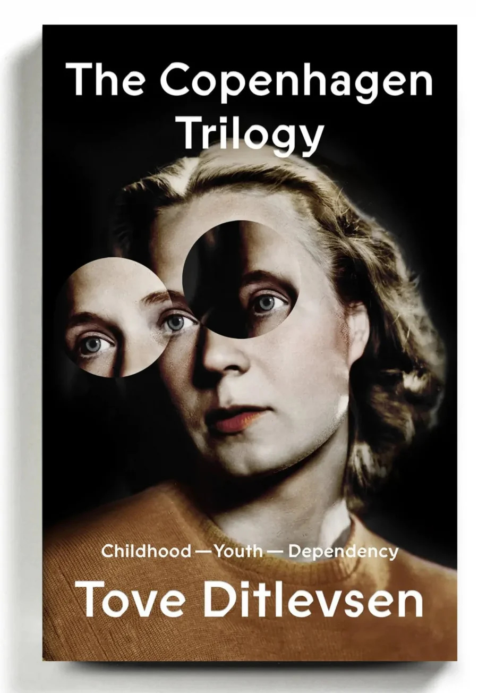
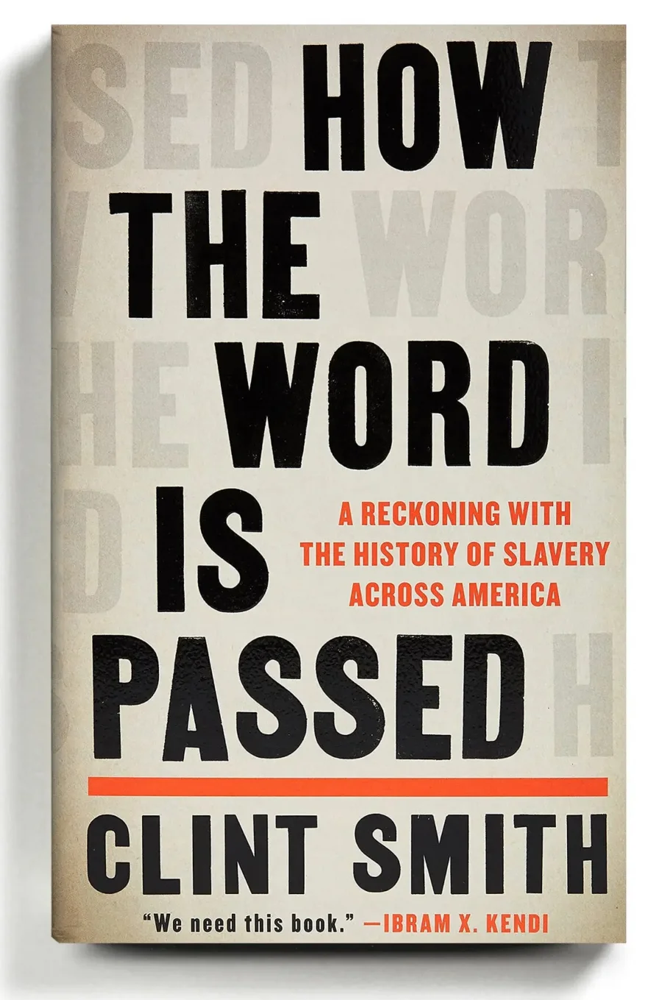
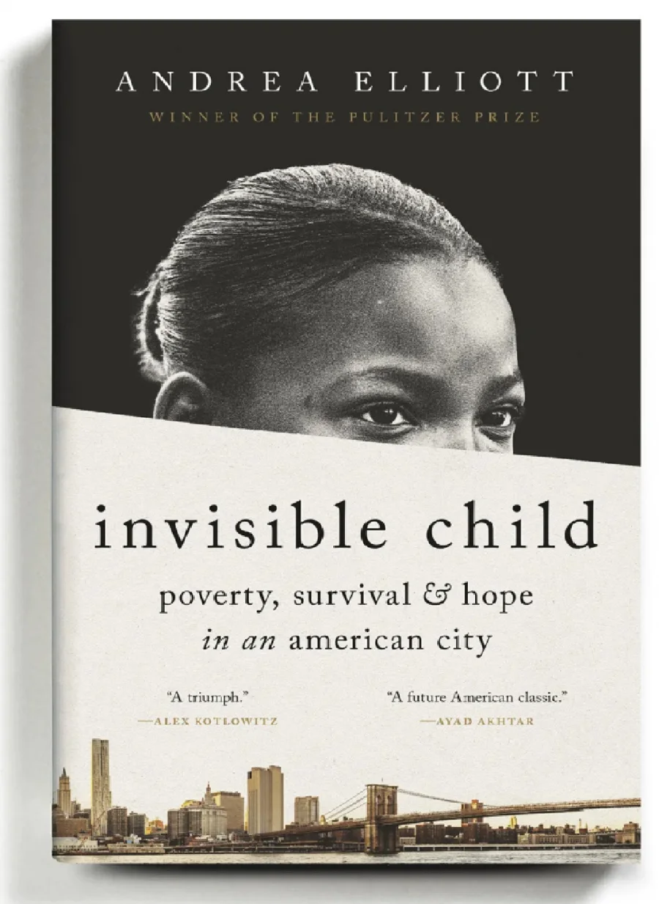
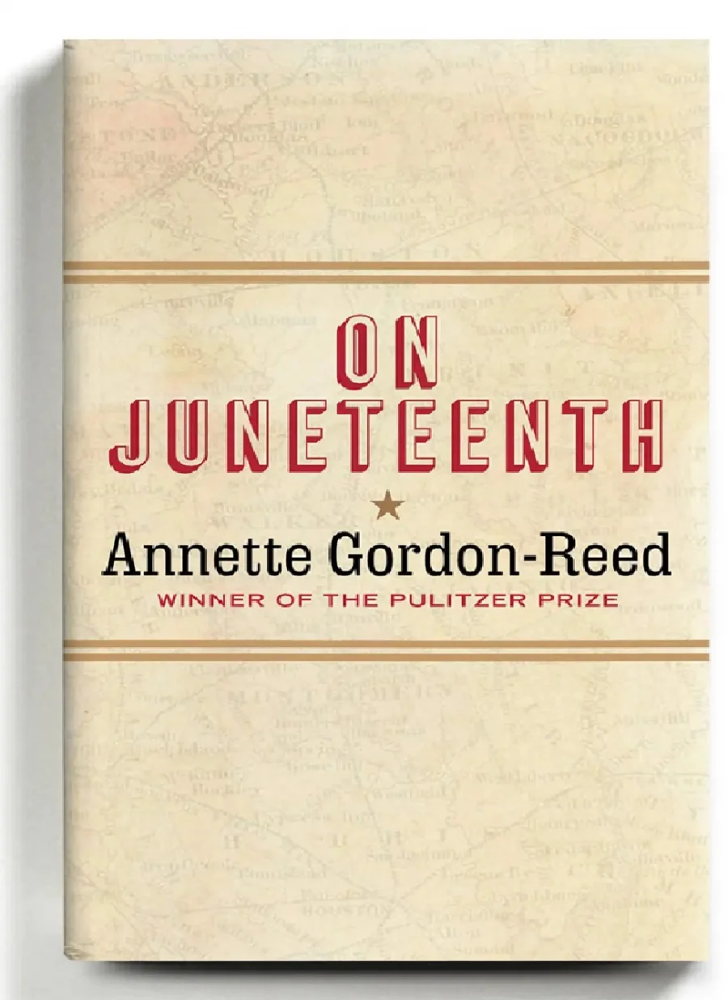
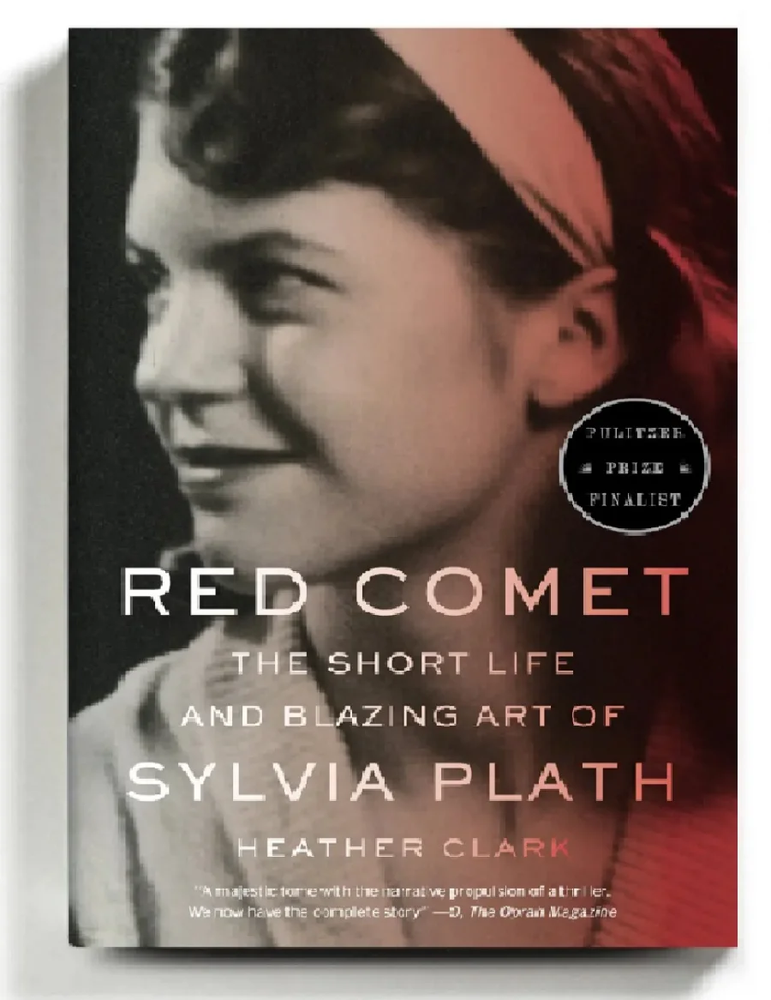

New York Times назвала десять лучших книг 2021 года
Стоит начать с ТОП лучших книг в истории мировой литературы. И тогда у вас гарантировано:
- улучшится память
- увеличится словарный запас
- появится уверенность в общении с коллегами и друзьями
- появится сосредоточенность и концентрация
- уйдет стрессовое состояние
- уйдет бессонница
Как говорится в описании списка, «редакторы The Times Book Review выбрали лучшие произведения художественной и нехудожественной литературы этого года».
Топ-10 лучших книг 2021 года по версии The New York Times:
Как красивы мы были (How Beautiful We Were), Имболо Мбуэ
«Второй роман Мбуэ, после дебютного Узрите мечтателей (2016), начинается в 1980 году в вымышленной африканской деревне Косава, куда приехали представители американской нефтяной компании, чтобы встретиться с местными жителями, чьи дети умирают из-за экологического хаоса».
Близость (Intimacies), Кэти Китамура
«В четвертом романе Китамуры безымянная судебная переводчица в Гааге получает задание погрузиться в голоса и истории военных преступников».
Любовные песни W.E.B. Du Bois (The Love Songs of W.E.B. Du Bois), Оноре Фанон Джефферс
«Первый роман Джефферса, знаменитого поэта, — это много вещей одновременно: трогательная сага о взрослении, исследование расы и раскопки американской истории. В романе рассказывается о темнокожей девочке Эйли Перл Гарфилд, растущей в конце XX века, и „песнях“ ее предков, коренных американцев».
Никто не говорит об этом (No One Is Talking About This), Патрисия Локвуд

«Локвуд впервые получила признание как поэт в интернете… В своем первом романе она описывает удовольствия и лишения жизни, разделенной между общением в Интернете и в реальной жизни».
Когда мы перестаем понимать мир (When We Cease to Understand the World), Бенджамин Лабатут
«Лабатут мастерски соединяет истории величайших мыслителей XX века, чтобы исследовать экстаз и агонию научных прорывов: их огромные достижения для общества, а также их тяжелые человеческие потери».
Копенгагенская трилогия: Детство; Молодость; Зависимость (The Copenhagen Trilogy: Childhood; Youth; Dependency), Туве Дитлевсен
«Великолепные мемуары Дитлевсен, впервые опубликованные в Дании в 1960-70-х годах и собранные здесь в одном томе, подробно описывают ее тяжелое воспитание, карьерный путь и беспощадные пристрастия: это мощный рассказ о борьбе за примирение искусства и жизни»..
Как передается слово: расплата с историей рабства в Америке (How the Word Is Passed: A Reckoning With the History of Slavery Across America), Клинт Смит.
«Для этой своевременной и заставляющей задуматься книги Смит, поэт и журналист, объехал места, имеющие ключевое значение для истории рабства и его современного наследия, включая Монтичелло Томаса Джефферсона, Анголу, тюрьму штата Луизиана, и кладбище конфедератов. … Смит подносит зеркало к непростым отношениям Америки с ее прошлым»
Невидимый ребенок: бедность, выживание и надежда в американском городе (Invisible Child: Poverty, Survival and Hope in an American City), Андреа Эллиотт
«Чтобы продолжить свою нашумевшую в 2013 году серию статей для газеты Таймс о Дасани Коутс, бездомной нью-йоркской школьнице, и ее семье, Эллиотт провела годы, следуя за своими подопечными в их повседневной жизни — приюты, школы, залы суда и социальные службы. Книга, которую она создала, — это глубокий репортаж, элегантно написанный и пронизанный неистовой любовью и остроумными наблюдениями Дасани и ее матери».
В День Свободы (On Juneteenth), Аннетт Гордон-Рид
«Эта книга объединяет историю и мемуары в коротком томе, проницательном, трогательном и мужественном. Исследуя расовые и социальные сложности Техаса, своего родного штата, Гордон-Рид просит читателей отойти от текущих горячих дебатов и более тонко взглянуть на историю и сюрпризы, которые она может преподнести».
Красная комета: короткая жизнь и яркое искусство Сильвии Плат (Red Comet: The Short Life and Blazing Art of Sylvia Plath), Хизер Кларк
«Смело браться за новую биографию Плат (поэтесса Сильвия Плат), чья жизнь и смерть из-за самоубийства в 30 лет в 1963 году были тщательно проанализированы учеными. Тем не менее, этот скрупулезно исследованный и неожиданно захватывающий портрет является монументальным достижением».
Мой Instagram: __jeeekkaa_10